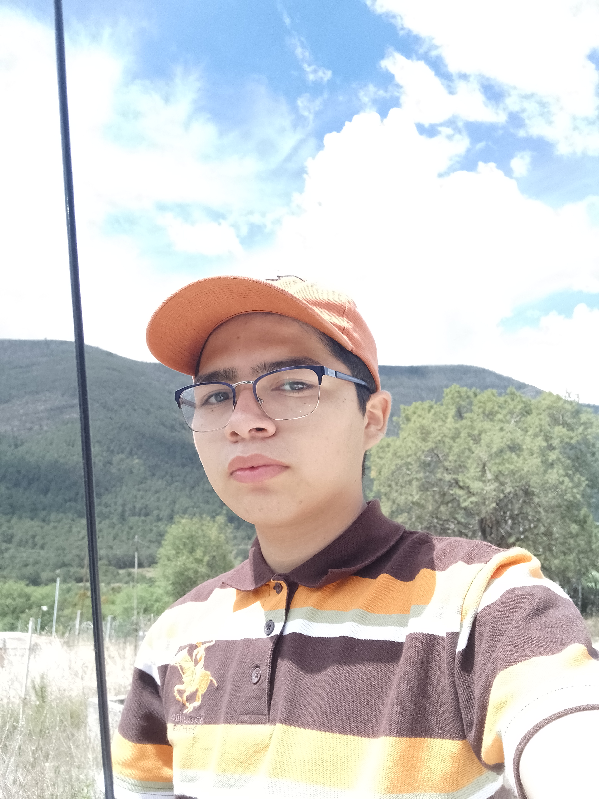

Curriculum Marcelino
Sitios web
Textos:
- Nombre: Angel
- Apellido: Guillen Salazar
- Fecha de nac. : 27/10/2005
- Lugar de nac: N.L. Monterrey
- Nacionalidad: Mexicano
- Domicilio:prados de santa catarina
-
Edad: 16
-
Mi Correo Electronico
Objetivos:
- Desarrollarme en un ambiente de trabajo que me lleve el conocimiento y aprendizaje.
- Ejercer y aplicar mis habilidades y fortalezas.
- Dar mi entrega y dedicacion al empleo.
Experiencia laboral:
- Marzo 2022; Curso, Maestros del fututo, Monterrey.- (Viendo los cursos y realizando los mini ejersicios )
- Agosto 2020: Ayudante, Vecino, Monterrey.- (Instalacion de camaras a negocios o casas y congigurarlas a las tv o computadoras.).-
- Septiembre 2019: Ayudante, Almacen, Monterrey.- (Acomodando los materiales y tener organizado).-
- Marzo 2018: Tienda Atendiendo, Tienda, Monterrey.- (Atendiendo la tiendita).-
Formacion academica: